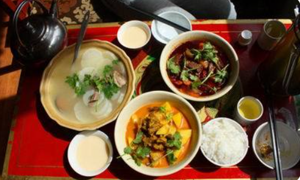
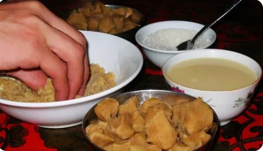
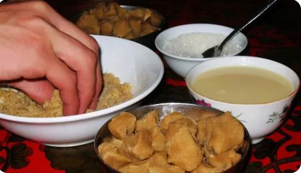
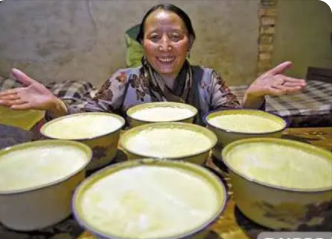

[ 美食介绍 ]

藏族特色美食“三大碗”
西藏三大碗是藏式民俗特色佳肴，相传从吐蕃王朝代代相传，味道鲜美，营养价值很高，经过三百多年的改良，越来越符合大众的口味，成为来西藏必吃的美食之一。
西藏三大碗是藏式民俗特色佳肴，相传从吐蕃王朝代代相传，味道鲜美，营养价值很高，经过三百多年的改良，越来越符合大众的口味，成为来西藏必吃的美食之一。
糌粑是藏族人民的主食
对于习惯吃糌粑的人来说，糌粑还是很好吃的，青稞炒面的清香，因加了酥油和奶茶，还有一股奶香。西藏的餐厅大部分有糌粑，一定要尝一尝，否则怎么算来过西藏呢。 
对于习惯吃糌粑的人来说，糌粑还是很好吃的，青稞炒面的清香，因加了酥油和奶茶，还有一股奶香。西藏的餐厅大部分有糌粑，一定要尝一尝，否则怎么算来过西藏呢。 

牦牛酸奶
在西藏，酸奶都是纯手工制作的牦牛酸奶。黄色的奶皮泛着淡香，那是牛奶最精华的部分，扒开这层奶皮，软嫩黏稠的酸奶像豆腐脑一样。推荐一家人气很高的“古树酸奶”，位于八廓南街28号古树下 ，特色有桂花酸奶、原味酸奶、人参果酸奶、纳木错酸奶（颜值非常高)，牦牛酸奶是纯天然无添加的，比较酸，可以自己加糖。
在西藏，酸奶都是纯手工制作的牦牛酸奶。黄色的奶皮泛着淡香，那是牛奶最精华的部分，扒开这层奶皮，软嫩黏稠的酸奶像豆腐脑一样。推荐一家人气很高的“古树酸奶”，位于八廓南街28号古树下 ，特色有桂花酸奶、原味酸奶、人参果酸奶、纳木错酸奶（颜值非常高)，牦牛酸奶是纯天然无添加的，比较酸，可以自己加糖。
Te Se Yin Shi
特色饮食
 酥油茶
酥油茶
酥油茶是中国西
藏的特色饮料.多作为主食与糌粑一起食用有御寒提神醒脑、生津止渴的作用。此种饮料用酥油和浓茶加工而
酥油茶
酥油茶是中国西
藏的特色饮料.多作为主食与糌粑一起食用有御寒提神醒脑、生津止渴的作用。此种饮料用酥油和浓茶加工而
酥油茶
酥油茶是中国西
藏的特色饮料.多作为主食与糌粑一起食用有御寒提神醒脑、生津止渴的作用。此种饮料用酥油和浓茶加工而
酥油茶
酥油茶是中国西
藏的特色饮料.多作为主食与糌粑一起食用有御寒提神醒脑、生津止渴的作用。此种饮料用酥油和浓茶加工而
彭梦婷
QQ:123456789
池玉海
QQ:123456789

广西财经学院
官网:www.gxufe.edu.cn
- 技术合作:百度
- 技术支持: Css3 JavaScript
- 联系电话:1234567891
©CopyRight 2021-2021 YA2.Net Inc All Rights Reserved. 彭池旅游 版权所有